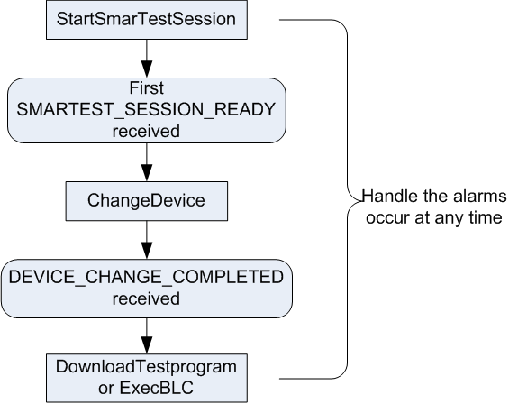

Initial SmarTest startup of the production environment
To start SmarTest in the factory automation production environment, you need to:
- Clean up the SmarTest environment to make sure that SmarTest can be started successfully
- Disable the interactive windows that may appear during the Startup
- Start SmarTest with SUPERVISOR and ONLINE mode
- Change to the target device when the first SMARTEST_SESSION_READY event is received
- Download the test program when the DEVICE_CHANGE_COMPLETED event is received
or execute the BLC client if you are controlling the test logic with BCL API (See How to execute a BLC from a HVM client.)
- Hide the operation control panel
During the SmarTest startup, you need to manage the issued alarms and take appropriate actions.
After SmarTest is started with the target device and the test program is downloaded, you can start the production testing.
The HMVAPI commands and events are used in the sequence as shown in the diagram below.

After the test program is downloaded, you can execute the test program with the HVM API ExecTestprogram.
Example
The following example is the main function of a SmarTest startup program in the factory automation production environment.
int main()
{
::xoc::hvmapi::ParamList opParams, opResults;
//clean up the SmarTest environment
system("kill_smarTest");
cout << "FA: Register handlers" << endl;
//Register the handler for SESSION events
if (!xoc::hvmapi::addEventListener (handlerSession, "SESSION"))
{
return(1);
}
//Register the handler for alarms
if (!xoc::hvmapi::addEventListener (handlerAlarm, "ALARM"))
{
return(1);
}
//Register the handler for DEVICE_CHANGE_COMPLETED event
xoc::hvmapi::ParamList aspect;
aspect["EXECUTION_STATE"] = "DEVICE_CHANGE_COMPLETED";
if (!xoc::hvmapi::addEventListener(handlerDeviceChangeComplete, "EXECUTION", aspect))
{
return(1);
}
string safe_device;
opParams["ONLINE_MODE"] = "OFFLINE";
opParams["USER_MODE"] = "SUPERVISOR";
safe_device="/home/demo/devices/dummy";
removeLockFile(safe_device);
//these two calls assure that SmarTest will come up cleanly in a safe device with no lockfile window
if(switchDeviceInUse(safe_device))
{
cout <<"cannot start SmarTest and safe_device does not exist" <<endl;
return 1;
}
//disable the appearance of the splash screen
setenv("SA_NO_SPLASH",1);
//Start SmarTest in SUPERVISOR and ONLINE mode
::xoc::hvmapi::Status retVal = operation("StartSmartestSession", opResults, opParams);
if(!retVal.isError())
{
cout <<"Successful startup and the session ID is s%\n" << opResults["SESSION_ID"] <<endl;
//hide the operation control panel
hide_op_window();
}
else
{
cout <<"\nerror code" << retVal.code() <<"\nerror description"<< retVal.text()<<endl;
}
cout << "FA: eventLoop started, now go to the evenloop" << endl;
xoc::hvmapi::eventLoop();
cout << "FA: eventLoop finished" << endl;
}
Functional changes
- Introduced before SmarTest 6.3.2